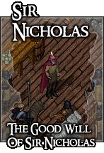
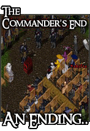
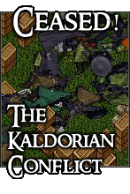
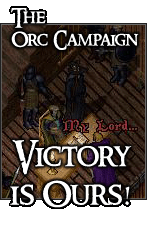

<TABLE BORDER CELLPADDING="0" background="bocimages/scrollbgdark.gif" width="100%">
	<TR>
	<!-- Header or whatever -->
	<BR>
		<TD valign="top" class="notes"><TABLE BORDER="0" CELLPADDING="2" class="notes">
		<TR>
		  <TD valign="top"><A href="JavaScript:tale_window('http://cove.sugeworld.com/forum/index.php/topic,3569.0.html')"
			alt="The Good Will Of Sir Nicholas.."></A><BR>
		  </TD>
		  <TD valign="top"><BR>
		    <U><B>The Good Will Of Sir Nicholas<BR>
		    </B></U> A short story that took place during a hard Covian winter, leaving
		    the Folk Tale House tavern without ale, and thus the season without merry.
		    <BR>
		    However, the cunning of Sir Nicholas saw the drinks delivered, and the festive
		    season saved!<BR>
		    <A href="JavaScript:tale_window('http://cove.sugeworld.com/forum/index.php/topic,3569.0.html')"
			alt="The Good Will Of Sir Nicholas..">Read..</A></TD>
		</TR>
		<TR>
		  <TD valign="top"><A href="JavaScript:tale_window('http://sugeworld.com/flash/170905/one.html')"
			alt="A Legend Passes.."></A><BR>
		  </TD>
		  <TD valign="top"><BR>
		    <B><U>The Commander's End</U></B><BR>
		    The tragic end of Cove's first Commander. Having been connected to supporting
		    and coordinating efforts toward the Yew rebellion, the Guardsmen Militia
		    crashed the Commander's retirement party in a rather soppy way. <BR>
		    <A href="JavaScript:tale_window('http://sugeworld.com/flash/170905/one.html')"
			alt="A Legend Passes..">Watch..</A></TD>
		</TR>
		<TR>
		  <TD valign="top"><A href="main.php?page=kaldor" alt="Ceased!"></A></TD>
		  <TD valign="top"><BR>
		    <B><U>The Kaldorian Conflict</U></B><BR>
		    Throughout the Kaldorian Conflict, various journals were kept by the Commander
		    of the Cove Militia. A few jots and scribblings are all that remains, but
		    the writing depicts the horror and brutality of the war against Kaldor.<BR>
		    <A href="main.php?page=kaldor" alt="Ceased!">Read..</A></TD>
		</TR>
		<TR>
		  <TD valign="top"><A href="JavaScript:tale_window('tales/orc.html')"
			alt="The Battle Rages On..."></A></TD>
		  <TD valign="top"><BR>
		    <B><U>The Orc Campaign</U></B><BR>
		    Cove's first and, arguably, greatest victory! During the early rising of
		    the Baronship of Cove, its City was corrupted and occupied by a mass horde
		    of Orcs. <BR>
		    For many months the Covian guardsmen battled this threat, and t'was not until
		    a vast army marched from Britain, that Cove was liberated from its captor!<BR>
		    <A href="JavaScript:tale_window('tales/orc.html')"
			alt="The Battle Rages On...">Read..</A></TD>
		</TR>
	      </table>
	      <P>
		</TD>
	</TR>
</TABLE>
